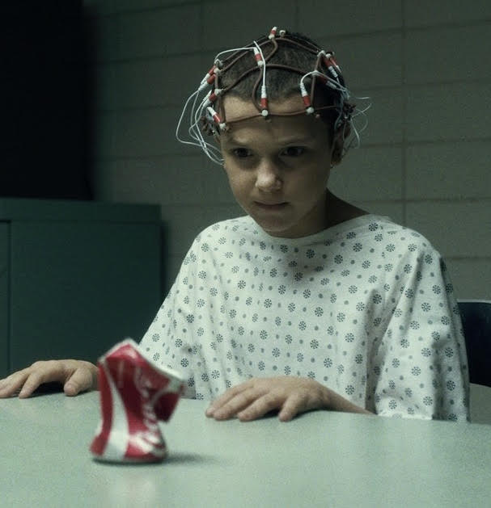

Klik hier

Stranger Things lijkt gewoon fictie maar wat veel mensen niet weten is dat Stranger Things daadwerkelijk gebaseerd is op meerdere waargebeurde verhalen. Zo is het eerste seizoen gebaseerd op de MK-Ultra. Dit was de codenaam voor een geheim experiment van de CIA. Ze experimenteerde hier met waarheidsserum en hersenspoeling. Dit was bedoeld om de Russen te verslaan tijdens de koude oorlog. Het begon als een vrijwillig onderzoek maar het groeide uit tot mensen die vast gehouden werden en blootgesteld werden aan drugs en andere experimentele middelen. Het meeste van het bewijs was vernietigd. Er zijn bewijzen gevonden voor onder meer het gebruik van verschillende soorten chemicaliën (medicatie en drugs).
 The Duffer Brothers waren ook geïnspireerd door een samenzwering van de regering genaamd het Montauk-project. Hier is niet veel bewijs van maar ze hebben het alsnog gebruikt als inspiratiebron voor de serie. Deze theorie houdt in dat er een aantal overheidsprojecten in het geheim waren met het oog op de ontwikkeling van technieken voor psychologische oorlogsvoering en exotisch onderzoek, waaronder tijdreizen. Dit rumor is begonnen toen bij 2 mensen onderdrukte herrineringen van hun betrokkenheid in het project naar boven kwamen. In Montauk Point schijnt er sprake geweest te zijn van militaire experimenten op gebieden als tijdreizen, teleportatie, mind control en contact met buitenaards leven. Er zijn meerdere films gemaakt over het Montauk Project.
Zo kan je maar zien dat er meer waarheid zit in het verhaal dan dat je waarschijnlijk verwacht had. Dat maakt Stranger Things ook zo'n bijzondere serie.